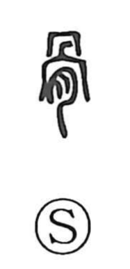

骨

Uncategorized
Kun: hone | On: kotsu
bone ・ skeleton ・ framework
Explanation
A pictograph: the upper element 冎 sketches the bones above the chest, while the lower 月 is the meat sign. Together they depict bone with flesh still attached, giving the basic sense “bone.” From this core image the character came to represent the body’s structural nucleus—hence terms like 骨格 (skeletal framework) and 筋骨 (sinews and bones)—and, by extension, the hardness and inner backbone of character, as in 気骨 (resolute spirit). The antique sense in kottō is linked with 董, a graph that conveys the idea of arranging and selecting fine old objects.